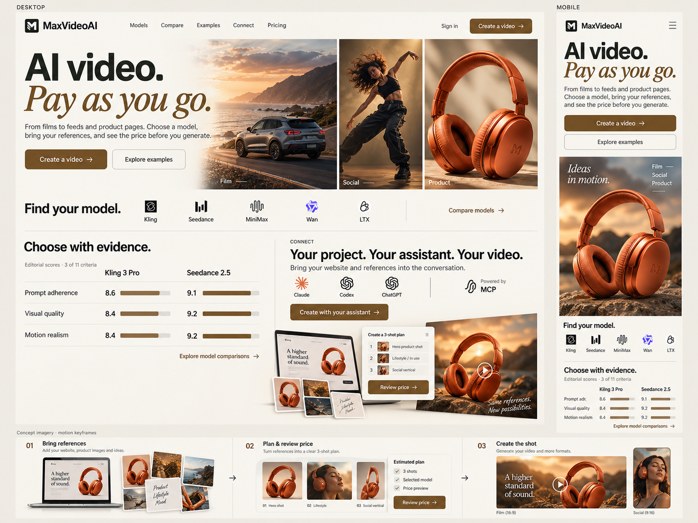

Créer à l’usage.
Le paiement à l’usage figure dans la promesse principale. Le prix à revoir avant génération revient au moment où il aide à décider.
Direction 08 · consolidation du mix 1 + 3 · anglais master
Le paiement à l’usage, les comparatifs et les exemples restent les fondations. Les références et la création avec un assistant montrent ce que MaxVideoAI apporte de nouveau.
Revue de conception. La planche illustre une direction ; elle n’est pas une nouvelle homepage fonctionnelle.

Le paiement à l’usage figure dans la promesse principale. Le prix à revoir avant génération revient au moment où il aide à décider.
Les modèles ont leurs identités et leurs vrais critères. Le mouvement révèle une comparaison ; il ne fabrique pas un classement en direct.
Connect relie les références, le plan proposé par l’assistant, le prix accepté et le résultat. Le terme MCP vient expliquer cette connexion.
Au-delà de la planche
La planche rapproche Compare et Connect pour les montrer ensemble. Sur la vraie page, chacun aura son espace de démonstration. Les chapitres ci-dessous donnent leur rôle et les pages qu’ils desservent.
“AI video. Pay as you go.” Film, social et produit expriment la diversité. Sur mobile : titre et actions, puis poster immédiatement visible, avant les liens secondaires.
Les médias de la planche sont illustratifs. Les exemples de la future page devront avoir leur provenance, leur modèle et leurs paramètres.
“Choose with evidence.” Logos d’origine, deux modèles clairement nommés, trois critères lisibles et accès aux onze critères. Au scroll, les barres se dévoilent ; les valeurs et les colonnes restent stables.
“Your project. Your assistant. Your video.” Un même produit traverse les références, le plan, la revue du prix et le résultat. Les objets se composent dans la scène au scroll ; la lecture reste possible à l’arrêt.
La nouveauté du MCP justifie sa place dès maintenant. Les guides par assistant gardent les détails d’installation et de compatibilité.
“Find a starting point for your next shot.” Une sélection de créations reliée aux pages d’exemples et aux guides : cinéma, publicité/social, produit web et essais rapides.
“Start with a prompt. Or bring a reference.” Image source et animation restent reconnaissables. Personnage, angle et upscale interviennent comme étapes utiles, avec les capacités réelles de chaque modèle.
“See the price. Then make the shot.” Réglages, devis, génération et historique donnent une preuve concrète du paiement à l’usage. Les informations répétées sont réunies dans un ensemble lisible.
“Before your first video.” Réponses courtes sur les modèles, les références, le paiement, l’assistant, les échecs et la bibliothèque. L’aide, les politiques et les réglages de consentement restent accessibles.
Le relevé GSC du 10 août au 6 septembre compte 637 clics pour l’accueil, 285 pour les exemples LTX, 69 pour Seedance et 45 pour Kling. Les pages d’exemples et les accès utiles ne doivent pas disparaître derrière une jolie image.
Le MCP est récent : ses performances passées ne peuvent pas décider à elles seules de sa visibilité. Connect aura un chapitre fort, puis un suivi des accès, des connexions et des premières créations selon le funnel disponible.
Fusionner les répétitions, raccourcir les phrases, déplacer un lien ou améliorer une section fait partie du travail. La continuité porte sur les intentions, les parcours et les contrats SEO ; le relevé de liens n’est pas un quota.
Les chiffres sont des relevés datés, pas une nouvelle extraction complète. La qualité mobile, les performances et la conversion seront mesurées sur le prototype. GSC, GA4, Clarity, consentement et Zoho font partie de la recette d’intégration.
La synthèse rend les piliers plus visibles. Elle reste trop condensée pour valider les composants à leur taille réelle.
Voir les sources de marque et les couleurs de l’app · Lire le plan complet · Provenance et critique de la planche · Prompt ImageGen exact